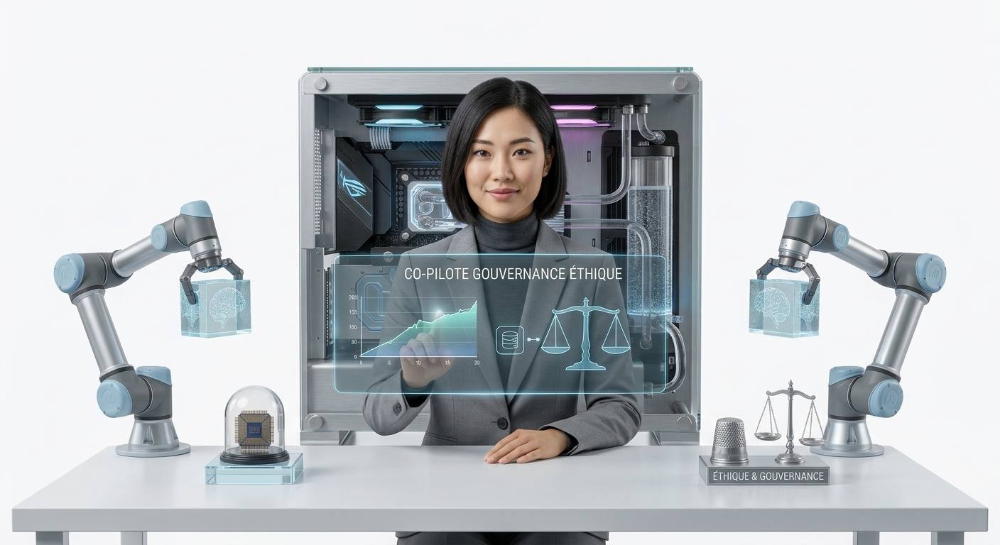

Exploration des professions inédites qui naissent directement du développement de l'intelligence artificielle, redéfinissant l'avenir de l'innovation et de l'éthique technologique.

Utilisation basique des moteurs de recherche avec des mots-clés simples et résultats souvent imprécis ou génériques.
Conception de contextes textuels complexes, structuration des instructions et optimisation des requêtes pour maximiser la précision des modèles génératifs.
Absence de cadre réglementaire spécifique aux algorithmes, conformité juridique limitée aux logiciels traditionnels.
Garantie de l'équité des modèles, détection des biais discriminatoires, protection de la vie privée et respect des réglementations internationales (AI Act).
Déploiement de logiciels informatiques standardisés nécessitant de lourdes formations internes pour les équipes.
Connexion des assistants intelligents aux bases de données internes des entreprises pour créer des flux de travail ultra-personnalisés.
Rapport prospectif sur les compétences les plus recherchées et les nouveaux métiers porteurs de croissance.
Enquête sur l'émergence des métiers de l'éthique, de l'ingénierie des invites et de la supervision algorithmique.
Lignes directrices sur le développement de l'éthique professionnelle et des standards de gouvernance en Europe.
 IA &
IA &